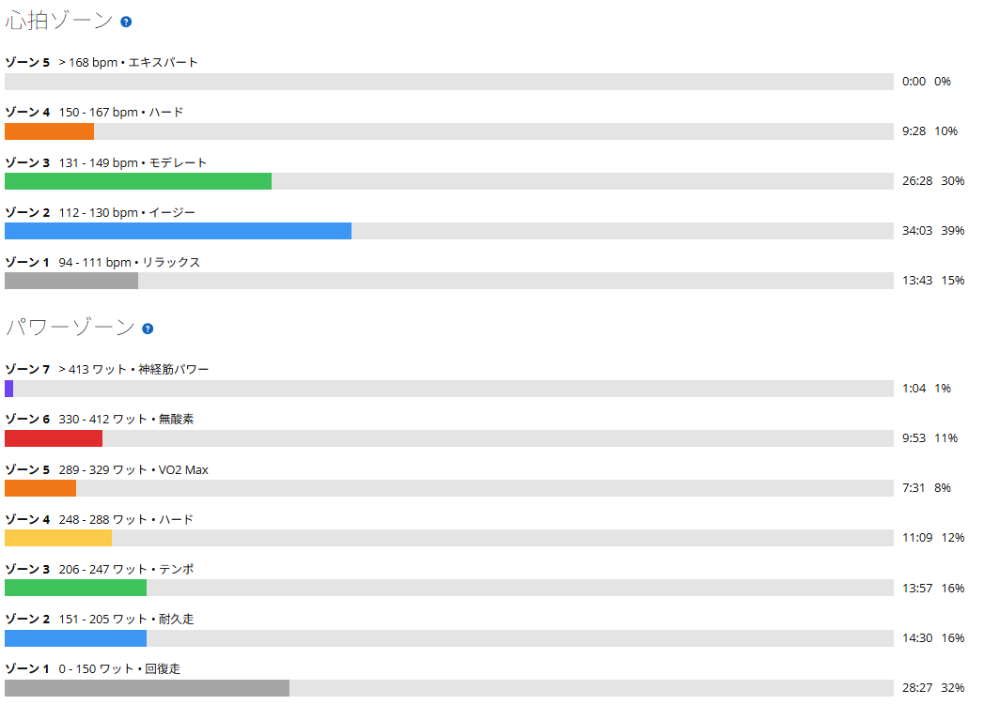

気分は乗らない。でも踏めば出た。太平は7分11秒・310W
今日は太平へ。昨日のローラーでは、身体や心拍に大きな問題はないのに途中で気持ちが切れた。だから今日は外へ。気分を変える意味でも、太平を走ることにした。
ただ、走り始めてみると、今日も最初から気分が乗っていたわけではなかった。「今日はよし、やるぞ」という感じではない。それでも、踏めば出る。そこが今日いちばん面白かった。

40.59km・NP244W・TSS112.7
- 全体40.59km / 1時間26分37秒 / 獲得473m / 運動負荷126
- 負荷平均188W / NP244W / IF0.886 / TSS112.7 / 最大658W / 20分最大238W
- 心拍・回転平均127bpm / 最大163bpm / 平均83rpm
- 環境平均29.0℃ / 最高32.0℃ / 推定発汗1,312ml
- 効果有酸素TE3.3 / 無酸素TE0.7
数字だけ見れば、しっかりONの日である。IF0.886、TSS112.7。でも、気持ちは最初からONだったわけではない。昨日が50分でTSS53.1だったので、負荷としては倍以上になった。
前半は、気分とは関係なく出力が出た
- 前半の踏みどころ2分06秒 339W / 2分10秒 345W / 50秒 410W
気分はまだそこまで乗っていない。でも、ペダルを踏めば数字は出る。この感覚が少し不思議だった。「やる気があるから出る」のではなく「やる気はそこまでなくても、身体は動く」。そんな感じである。
昨日はそのまま気持ちが切れて終わった。今日は、気分が乗らなくても、とりあえず淡々と進めた。同じ入口から、違う結果になっている。
太平は7分11秒・310W。そのあとも253Wと281W
- 太平7分11秒 / 310W / 心拍149〜163bpm
- 前回（8月17日）6分58秒 / 330W
- 後半12分58秒 253W → 短い中断 → 4分19秒 281W
太平は前回のようにタイムを狙う内容ではない。実際、8月17日の6分58秒・330Wと比べれば13秒遅く、20W低い。それでも、しっかり踏めてはいる。感覚としては「今日はダメだな」というほどではなく、むしろ気持ちが乗っていない割には普通に走れている。この辺りで「気分と出力は別なのかもしれない」と思い始めた。
太平を下ったあとも、完全に流して終わりにはしなかった。12分58秒を253W、短い中断を挟んで4分19秒を281W。前半で高い出力を出して、太平も登ったあとである。それでも後半にまた出力を作ることができた。今日は最初から最後まで「気分は微妙。でも身体は動く」という感じだった。
ゾーン5以上で18分28秒。数字は明確に高強度
- パワーゾーンZ7 1分04秒 / Z6 9分53秒 / Z5 7分31秒 / Z4 11分09秒
- 心拍ゾーンZ4 9分28秒 / Z5は0分00秒（平均127bpm・最大163bpm）

ゾーン5以上が18分28秒、ゾーン4まで含めれば29分37秒。数字だけ見れば明確に高強度である。でも、自分の中のテンションはそこまで高くない。ここが最近ちょっと難しい。
気分が乗らなくても踏めば出る。でも、その判断が難しい
今日いちばん感じたのは、気分が乗っていなくても踏めば出る、ということだった。これは良いことでもあるし、少し難しいことでもある。
「やる気がないから今日はダメ」と判断してしまえば、本当はできる日まで止めてしまうかもしれない。逆に「数字が出るから大丈夫」だけで無理を続けるのも違う。感情と身体、どちらを信じるか。その調整が難しい。
自転車のメニューなら、何Wで何分、何本、レスト何分と数字で決められる。でも「今日は気分が乗らない」は数字では決められない。昨日はそれに引っ張られて途中でやめた。今日は気分が乗らなくても淡々と進めて、結果として普通に走れた。
だから今後は「気分が低い＝今日はダメ」とすぐには決めない方がよさそうだ。まず走る。少し踏んでみる。身体が反応するなら続ける。本当にダメなら落とす。それくらいの方が自分には合っているのかもしれない。
今日やってみて思ったこと
今日は気分があまり乗っていなかった。でも出力は出た。太平も310Wで登れたし、後半も持続走ができた。昨日は気持ちが切れて終了、今日は同じように気分が乗らなくても最後まで走れた。この違いはまだよく分からない。
でも「感情とパワーは必ずしも一致しない」ということだけは分かってきた。今の課題は脚力だけではない。気分が低い時にどうスタートするか。そこで身体の反応を見て、どう判断するか。この辺りも、今後の練習のひとつになりそうだ。
次に見るポイント
- スタートの判断気分が低い日に、まず10分踏んでから決められるか
- 昨日との違いやめた日と走れた日で、身体側の数字に差が出るか
- 太平気分が乗った日に、また330W前後まで戻せるか
- 後半メインのあとに250〜280W台を作る形を続けられるか